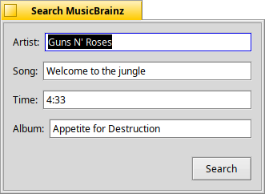

MusicBrainzSearch
Searches MusicBrainz for recordings and releases.
#include "tagkit/MusicBrainzSearch.h"
Detailed Description
All the functions perform network I/O, so always call them from a worker
thread, never the UI thread. Search() is the general one: any mix of
artist, title, album, year, track number and comment, a page of results at a
time, with a status that says why a search failed. SearchRecording()
and SearchReleases() are simple forms of it for the common cases, in
which failures (network errors, malformed responses, ...) are swallowed rather
than reported, so a failed search looks like zero results.
LookupDiscId() and LookupRelease() are for a program that already knows which release it wants, such as a CD ripper: they return the album's details and the disc's track list instead of searching.
Requests identify the calling program; see ClientInfo.

TagView's Search MusicBrainz dialog, which calls SearchRecording(); leaving the song blank searches for cover art with SearchReleases().
Types
struct RecordingQueryWhat to look for in a recording search, and which page. |
struct RecordingSearchResultOne page of results, with a status and paging information. |
Class Functions
Documentation
struct RecordingQuery
What to look for in a recording search, and which page.
Every text field is optional (an empty one is left out of the search), but at least one must be filled in.
BString artist, title, album, year, track, comment | What to search for. album is a release the recording is on; year a release date such as "1999"; track the position on its disc; comment MusicBrainz's disambiguation note. |
int32 offset | How many results to skip, for paging. 0 starts at the beginning. |
int32 limit | How many results to ask for, 1–100; 0 means 25. |
int32 targetSeconds | If not below 0, the page is re-sorted by how close each recording's length is to this (closest first, ties keeping MusicBrainz's order, recordings with no known length last). Only that page is sorted, not the whole search. Default -1. |
bool oneRowPerRelease | false: one match per recording, with the release that matches album (else the first) filled in and every release listed in releases for cover art. true: one match per recording and release — the same song on three albums gives three matches, each with that release's album, year and track and only that release in releases. |
struct RecordingSearchResult
One page of results, with a status and paging information.
status_t status | B_OK, or why the search failed: B_TIMED_OUT (a time limit ran out), B_BUSY (MusicBrainz said "too many requests" even after waiting and trying again), B_BAD_VALUE (nothing to search for) or B_ERROR. |
std::vector<RecordingMatch> matches | The page's matches (see RecordingMatch). |
int32 totalCount | How many recordings MusicBrainz says match in all, or -1 if unknown. |
int32 nextOffset | The offset to give the next query to get the following page. |
bool HasMore() const | True if there is probably another page after this one. |
static RecordingSearchResult MusicBrainzSearch::Search(const RecordingQuery& query)
Looks up one page of recordings.
Each search is given network_timeout()
seconds. MusicBrainz allows about one request a second; if it answers "too many
requests" the search waits a moment and tries once more before giving up with
B_BUSY. To page through the results, keep the query, set its
offset to the previous result's nextOffset, and search
again while HasMore() is true. Wait a second or so between pages.
Parameters
query- What to look for, and which page.
Returns
The page of results; check status first.
static std::vector<RecordingMatch> MusicBrainzSearch::SearchRecording(const BString& artist, const BString& song, const BString& album, int32 maxResults = 10, int32 targetSeconds = -1, bool* timedOut = NULL)
Finds recordings by artist and song.
The simple form of Search(): the first page only, cut
down to maxResults.
If album is given, only recordings that appear on a
matching release come back, and that release is the one reported as each
match's album, year and track (and listed first among its releases for cover
art). This helps when a plain artist and song search buries the album you are
after among live versions and compilations.
The searches ask MusicBrainz's web service for JSON through
http_get(), so each is limited to
network_timeout() seconds. When that runs out
the result is empty and timedOut says so, so a caller can report
"timed out" instead of "no matches". A search MusicBrainz keeps refusing as
"too many requests" also looks like a failed search; use Search()
to tell the two apart.
Without a targetSeconds (below 0), matches come back in
MusicBrainz's own relevance order. With one, everything MusicBrainz returned is
re-sorted by how close its length is to targetSeconds (closest
first, ties keeping MusicBrainz's order, recordings with no known length last)
before being cut down to maxResults — the closer the length,
the likelier it is the same recording.
Parameters
artist- The artist.
song- The song title.
album- Optional; pass an empty string to leave it out.
maxResults- The most matches to return.
targetSeconds- The file's length, or
-1for none. timedOut- If not
NULL, set totrueif the search ran out of time, otherwisefalse.
Returns
Up to maxResults matches (see RecordingMatch); empty if there were none or the lookup failed.
static std::vector<ReleaseRef> MusicBrainzSearch::SearchReleases(const BString& artist, const BString& album, int32 maxResults = 25, bool* timedOut = NULL)
Finds releases by artist, for cover art without a song.
Narrowed to titles matching album if one is given. Results
are in MusicBrainz's relevance order, with repeats of the same title and year
dropped. TagView uses this to look for covers by artist and album, which casts
a wider net than the releases of one recording.
Parameters
artist- The artist.
album- Optional; pass an empty string to leave it out.
maxResults- The most releases to return.
timedOut- If not
NULL, set totrueif the search ran out of time, otherwisefalse.
Returns
The releases found; empty if there were none or the lookup failed.
static ReleaseLookupResult MusicBrainzSearch::LookupDiscId(const BString& discId)
Finds the releases with a CD's disc ID, with their track lists.
The disc ID is what libdiscid computes from a CD's table of contents. Each release in the answer has the album's details and the tracks of the disc with that ID (for a release of several discs, only that one; discNumber says which). Several releases come back when different pressings share a table of contents. See ReleaseInfo.
Like the searches it does network I/O on a worker thread and tries once more if MusicBrainz says it is busy. When MusicBrainz has no release for the disc the status is B_ENTRY_NOT_FOUND, which is common and not an error: nobody has submitted that disc. A program can then fall back to SearchReleases() with the artist and album, and LookupRelease() on the result.
Parameters
discId- The disc ID; letters, digits and
- _ .only, otherwiseB_BAD_VALUE.
Returns
A ReleaseLookupResult: status (B_OK, B_ENTRY_NOT_FOUND, B_TIMED_OUT, B_BUSY, B_BAD_VALUE or B_ERROR) and the matching releases in MusicBrainz's order.
static ReleaseLookupResult MusicBrainzSearch::LookupRelease(const BString& releaseId, const BString& discId = BString())
Fetches one release by its ID, with its track list.
For the track list of a release found by SearchReleases(). With a discId, the tracks are those of the disc with that ID (when the release has it, or else of its only disc if it has just one). Without one, or when no disc matches on a release of several discs, the tracks of all discs are listed in order and TrackInfo::disc says which disc each is on.
Parameters
releaseId- The release's MusicBrainz ID.
discId- Optional disc ID to pick the disc by.
Returns
A ReleaseLookupResult with one release on success.
static DiscLookupResult MusicBrainzSearch::LookupDisc(const BString& discId, int32 trackCount, const BString& artist = BString(), const BString& album = BString(), int32 maxCandidates = 10)
Finds the best release for a CD by its disc ID, falling back to an artist and album search.
First tries LookupDiscId(). Many discs are not registered with MusicBrainz, so when that finds nothing and an artist is given, this searches for the artist and album (SearchReleases()) and looks the first few results up (LookupRelease()). A release found that way lends its track list only if it has a disc with exactly trackCount tracks. A deluxe edition with extra tracks, or a box set where no disc fits, is still returned for its album details and cover art, but hasTracks is false, so the wrong recordings are never attached to the CD's tracks. Pass 0 as trackCount when it is not known, to never use a search result's tracks.
The several requests this can make are spaced about a second apart, which is what MusicBrainz asks (all of TagKit's MusicBrainz requests are, across threads). Like the other lookups it does network I/O, so call it from a worker thread. Hare uses it for the CD it has loaded.
Parameters
discId- The disc ID, or empty to look by artist and album only.
trackCount- How many tracks the CD has, or
0if unknown. artist- For the fallback search; without it there is no fallback.
album- Optional, narrows the fallback search.
maxCandidates- The most releases to list in
candidates(for cover art).